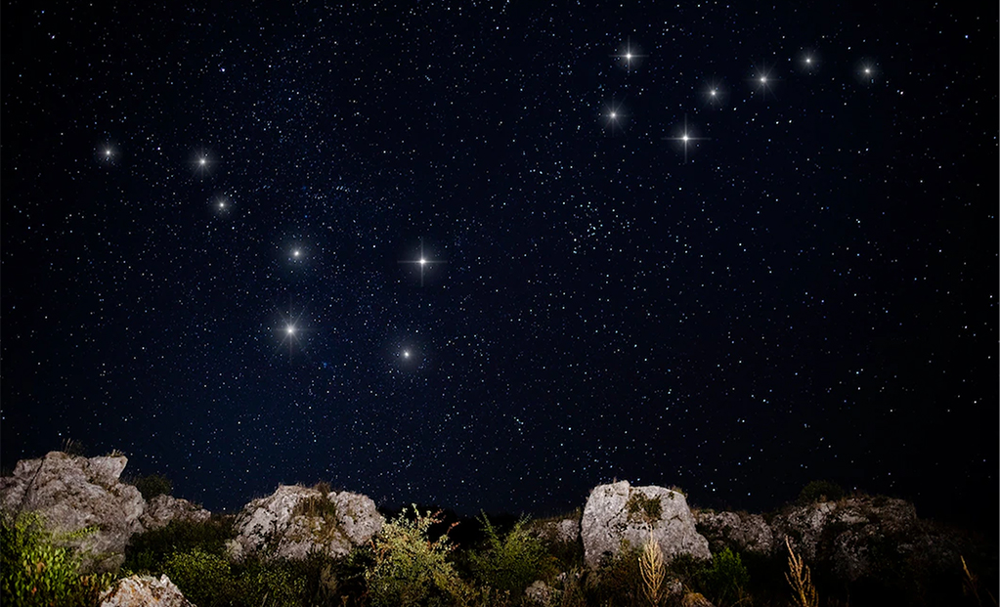

Nuestro Alrededor
La belleza natural rodea a Teros Ranch, donde cada rincón es un testimonio de la majestuosidad de la naturaleza. Desde nuestras instalaciones, contempla el imponente Cielo Austral, que se despliega sobre nosotros con su espectáculo estrellado y auroras mágicas. Explora la serenidad de la Meseta Patagónica, un paisaje vasto y cautivador que te transportará a un mundo de tranquilidad. Descubre la magia de la región mientras te sumerges en la contemplación de la grandiosidad del Lago Buenos Aires, cuyas aguas reflejan la pureza de este entorno único. En Teros Ranch, no solo ofrecemos un lugar para quedarse, sino una puerta de entrada a la maravilla natural que nos rodea. Cada opción, ya sea el Cielo Austral, la Meseta Patagónica o el Lago Buenos Aires, promete una experiencia única e inolvidable. ¡Ven y descubre la auténtica belleza de nuestro entorno en Teros Ranch!"

Lago Buenos Aires
El Sub Campeon America
Se llama Buenos Aires pero dista de parecerse a la capital del país.
Es un clásico lago patagónico, con el encanto de sus aguas generosas en pesca y vientos que lo encrespan o lo acarician, según el día.
Desde nuetra finca, podemos disfrutar de una hermosa vista de las costas color turqueza, de su inmensidad dado que cuenta con una superficie es de 2.240 kilómetros cuadrados repartidos entre los territorios argentino y chileno, y de el contorno de sus imponentes montañas de la Cordillera de los Andes.

Meseta patagonica
Area exclusivas para Carpas
Es una unidad tectónicas y formaciones geológicas de la Argentina. La cual estuvo sometida a intensos movimientos de ascenso y descenso que generaron un paisaje parecido a una gran escalera de departamento.
Su paisaje, en la cima, es de origen volcanico con cañadones, llanuras y pastizales. Tambien cuenta con un importante reservorio hídrico, del cual descienden ríos, arroyos y manantiales.
Su riqueza arqueológica es tal que en sus cercanias se halla la majestuosa Cueva de las Manos.

Cielo Austral
La cosmovisión de los Tehuelches
En el hemisferio Sur somos privilegiados porque podemos ver con claridad muchas constelaciones que más al Norte, como la famosa Cruz del Sur.
La Cruz del Sur, esta compuesta por dos segmentos cruzados y sirve además como una brújula, (La Cruz) marcan la dirección al polo sur celeste. Es una constelación tan importante que varios países la llevan en sus banderas.
Ver por primera vez un cielo patagónico es algo que no te vas a olvidar fácilmente!!!
En Teros Ranch pasaran noches de historias o historia para contemplar.